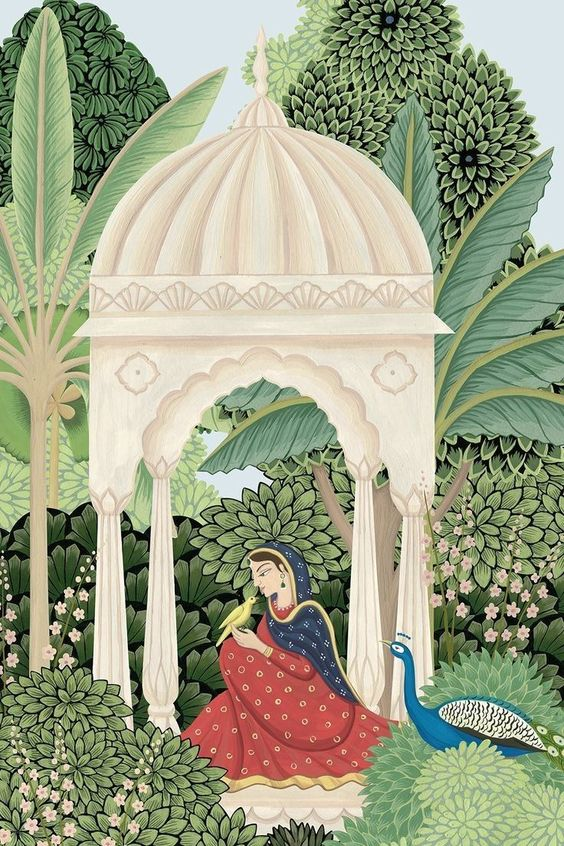
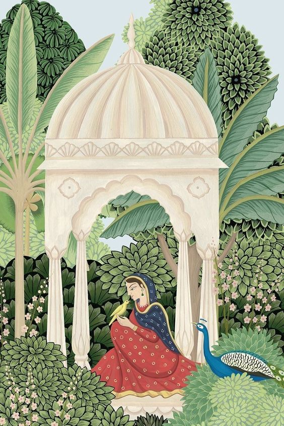
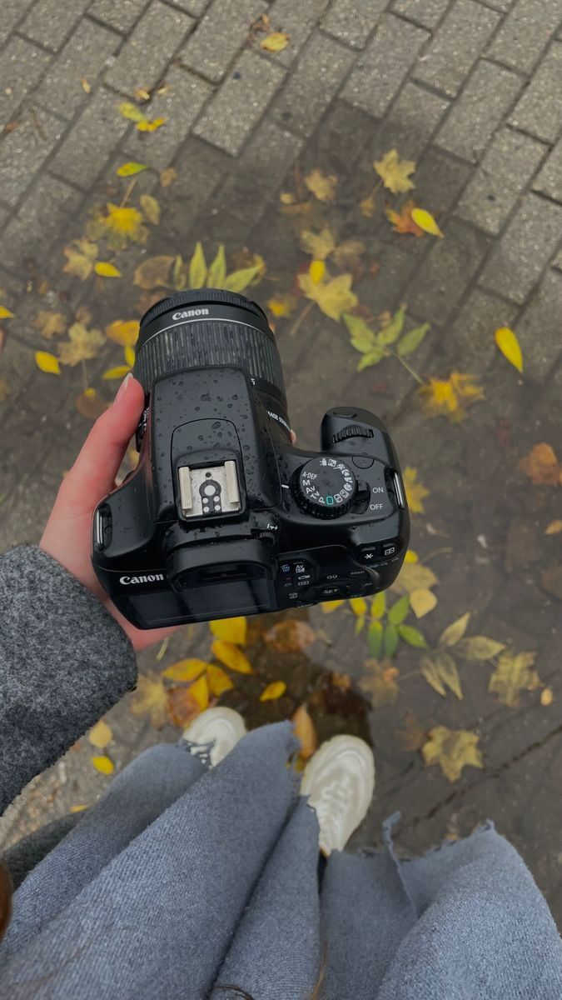
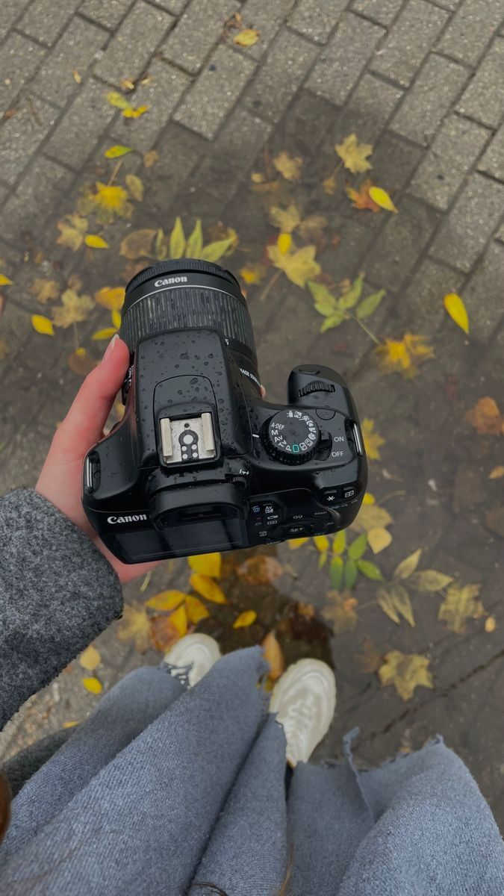
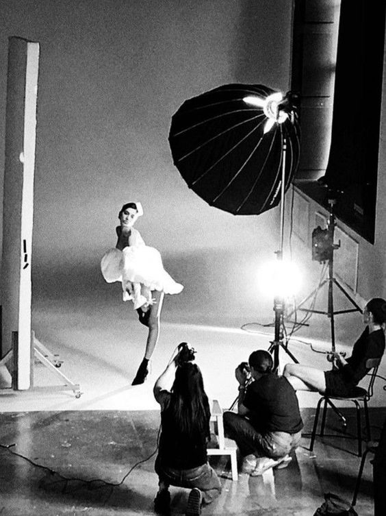
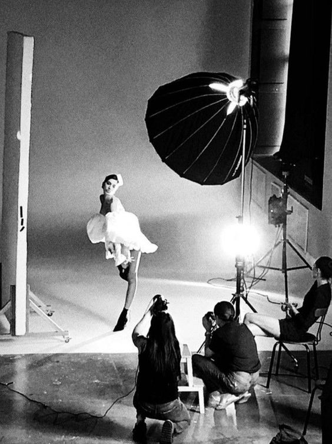

Welcome to our Arts page
In the world of art, sculpture stands as a captivating testament to human creativity and expression. From ancient times to the modern era, sculptors have shaped stone,
clay, and metal into works of timeless beauty and meaning. Each sculpture tells a story, capturing moments in time and inviting viewers to explore the depths of emotion and imagination.
Whether it's the serene elegance of classical statues or the bold experimentation of contemporary forms, sculptures continue to inspire and intrigue,
offering a glimpse into the boundless possibilities of artistic creation.
 

Paintings, a quintessential form of visual art, encompass a diverse array of styles, techniques, and subjects that reflect the boundless creativity of artists throughout history.
From the majestic landscapes of the Romantic era to the vibrant abstractions of the modern age, paintings offer a window into the human experience, capturing emotions, narratives, and perspectives with each brushstroke.
Realism portrays scenes with meticulous detail and accuracy, while impressionism emphasizes light and color, capturing fleeting moments with a sense of spontaneity and movement.
Surrealism delves into the realms of dreams and the subconscious, while abstract expressionism celebrates freedom of expression and the power of intuition.
Whether depicting the beauty of nature, the complexities of the human condition, or the depths of imagination, paintings continue to inspire, provoke, and resonate with viewers across cultures and generations.
 

 

Photography is more than just capturing moments; it's about freezing time and immortalizing memories.
With the click of a button, photographers can transform ordinary scenes into extraordinary works of art, using light, composition, and perspective to tell stories and evoke emotions.
Whether it's capturing the candid joy of a child's laughter, the breathtaking beauty of a sunset,
or the poignant stillness of a city street, photography allows us to see the world through new eyes and appreciate the beauty in the everyday. With each frame, photographers invite us to pause, reflect, and
marvel at the fleeting moments that make life worth living.